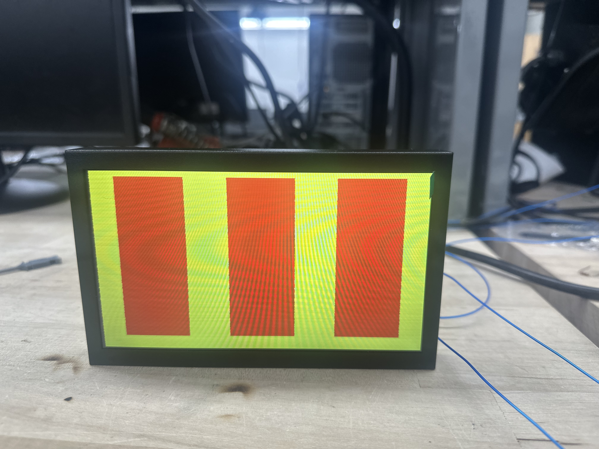

Results
The final project worked as we had planned out initially, and we were able to meet all our specs. Users can put in coins into the coin detector, which will add to their credit count, and then they can dynamically change the bet/wager amount they want to play under. They can then click on the pushbutton to start a spin, and test their luck to get a winning sequence! Each reel stops at a centered, random sprite each spin, and reel1 stops first, then reel2, and finally reel3. As each reel is about to stop, it also slows down to simulate a real slot machine.
The system runs at 25.5 Mhz, with SPI running at around 40Hz. We wanted to have as few clocks as possible to avoid CDC issues. Slthough we did have timing violations in some paths because we had large logic cones and a fast clock, we found ways parallelize the design more, reduce fanout, and pipeline our architecture more to have a stronger positive slack.
Here is out Slot Machine Project Demo:
The project has evolved a lot during the course of our work. The memory controller in particular was quite challening because of how quickly it needs to calcualte the addresses of the sprites on different reels, moving at different speeds, which are being scanned horizontally by the VGA, so this is where a lot of our evolution occured. Below are some of the inital stages of how our VGA looked:
 In Figure 1, we were able to get objects to show up on the VGA in the correct position.
In Figure 1, we were able to get objects to show up on the VGA in the correct position.
 In Figure 2, were were able to get three reels displaying, with no sprites.
 Figure 3 shows each reel being partitioned into segments which stand for sprites, although all the memory addressing was not working correctly here.
Figure 3 shows each reel being partitioned into segments which stand for sprites, although all the memory addressing was not working correctly here.
 Figure 4 shows unclear, and distored images because of more memory addressing issues. Additionally, we were limited ot just 3 different sprites, and when we added any more, it would distort all the images.
Figure 4 shows unclear, and distored images because of more memory addressing issues. Additionally, we were limited ot just 3 different sprites, and when we added any more, it would distort all the images.
 Figure 5 shows a stronger effect we experienced in Figure 4, where adding more sprites distorted all the images in unclear ways. This was likely due some EBR optimization happening from the synthesis tool.
Figure 5 shows a stronger effect we experienced in Figure 4, where adding more sprites distorted all the images in unclear ways. This was likely due some EBR optimization happening from the synthesis tool.
 And FINALLY, after a lot of debugging and trial and error, we were able to get all 7 sprites to show up cleanly on the VGA with no distortion!
And FINALLY, after a lot of debugging and trial and error, we were able to get all 7 sprites to show up cleanly on the VGA with no distortion!
 Figure 7 shows how our hardware looked before the hardware housing was built.
Figure 7 shows how our hardware looked before the hardware housing was built.
Simulation Results
To ensure proper functionality and to debug subtle timing issues, the team developed unit level testbenches for the VGA controller, SPI rereceiverciever, and memory controller.
VGA controller
Our testbench for the VGA controller did not have to provide any stimulus aside from clock and reset signals. The testbench let the VGA controller run through several frames, continuously checking the outputs of the desisgn against a set of design properties described with SystemVerilog assertions, which confirm proper timing in acordance to the VGA specification. Figure 8 shows the VGA signal waveforms from this testbench.

These waveforms demonstrate the expected timing of VGA signals, as well as some helper signals for the SystemVerilog assertions.
SPI receiver
Our testbench for the SPI receiver module makes use of a custom SPI send data task which drives the input SPI signals to send 2 bytes of data of SPI to the device under test. This testbench does not self check with assertions, but was used mainly as a tool to investigate timing issues during hardware debugging. As such, this testbench was created to carefully match the clock timing and pulse width of the serial clock signal from the MCU and the internal PLL clock on the MCU. Figure 9 demonstrates the output waveforms from this testbench.

From these waves we see a spin request and win request be accepted and properly parsed by the SPI receiver, as demonstrated by the module correctly driving the ending sprite indices and win credits following the two requests.
Memory controller
Our testbench for the memory controller sends a spin request to the memory controller, which produces the RBG pixel values for all pixels on the screen with help from an instance of the VGA controller. In addition to ad-hoc verification by way of investigating waveforms for expected pixel behavior, the design was continuously checked against a set of properties described with SystemVerilog assertions. Figures 10 and 11 demonstrate two of the key behaviors for this module.


From figure 10, we see that the pixel color is always black surrounding the vsync pulse that ends the frame. Additionally, figure 11 demonstrates that interesting color data is extracted from memory when the hcount value is within one of the spinning reels, otherwise displaying black, as desired.
Quantitative Analysis
We wanted to make our slot machine as accurate as possible to real slot machines. In the gaming insdustry, it is typical to design slots to have around a 85-95% average return for playing a single spin. We wanted to tailor our odds to something close to this. Howver, since our ending sprite selection is true random, the ony way to increase average payout is to make more possible ways to win. To do this, we added a wildcard symbol and made any combination of single and triple bars pay.
As part of routine unit testing for the winning calculations, we ran a regression of every possible combination of sprite indices, keeping track of the value won for each combination and taking the average to find the average payout of our slot machine.
...
WILD + TPLBAR + TPLBAR | [WILD, TPL_BAR, TPL_BAR] | 9 | 9 | PASS
WILD + TPLBAR + SEVEN | [WILD, TPL_BAR, SEVEN] | 0 | 0 | PASS
WILD + TPLBAR + WILD | [WILD, TPL_BAR, WILD] | 9 | 9 | PASS
WILD + SEVEN + LEMON | [WILD, SEVEN, LEMON] | 0 | 0 | PASS
WILD + SEVEN + CHERRY | [WILD, SEVEN, CHERRY] | 0 | 0 | PASS
WILD + SEVEN + BELL | [WILD, SEVEN, BELL] | 0 | 0 | PASS
WILD + SEVEN + BAR | [WILD, SEVEN, BAR] | 0 | 0 | PASS
WILD + SEVEN + TPLBAR | [WILD, SEVEN, TPL_BAR] | 0 | 0 | PASS
WILD + SEVEN + SEVEN | [WILD, SEVEN, SEVEN] | 10 | 10 | PASS
WILD + SEVEN + WILD | [WILD, SEVEN, WILD] | 10 | 10 | PASS
WILD + WILD + LEMON | [WILD, WILD, LEMON] | 2 | 2 | PASS
WILD + WILD + CHERRY | [WILD, WILD, CHERRY] | 3 | 3 | PASS
WILD + WILD + BELL | [WILD, WILD, BELL] | 5 | 5 | PASS
WILD + WILD + BAR | [WILD, WILD, BAR] | 7 | 7 | PASS
WILD + WILD + TPLBAR | [WILD, WILD, TPL_BAR] | 9 | 9 | PASS
WILD + WILD + SEVEN | [WILD, WILD, SEVEN] | 10 | 10 | PASS
WILD + WILD + WILD | [WILD, WILD, WILD] | 10 | 10 | PASS
---------------------------------------------------------------------------------------------
Average win is 0.962099From the result of our test program, we see that the average payout is 96.2099%, which is very close to the desired range mentioned above, with odds slightly better for the player.